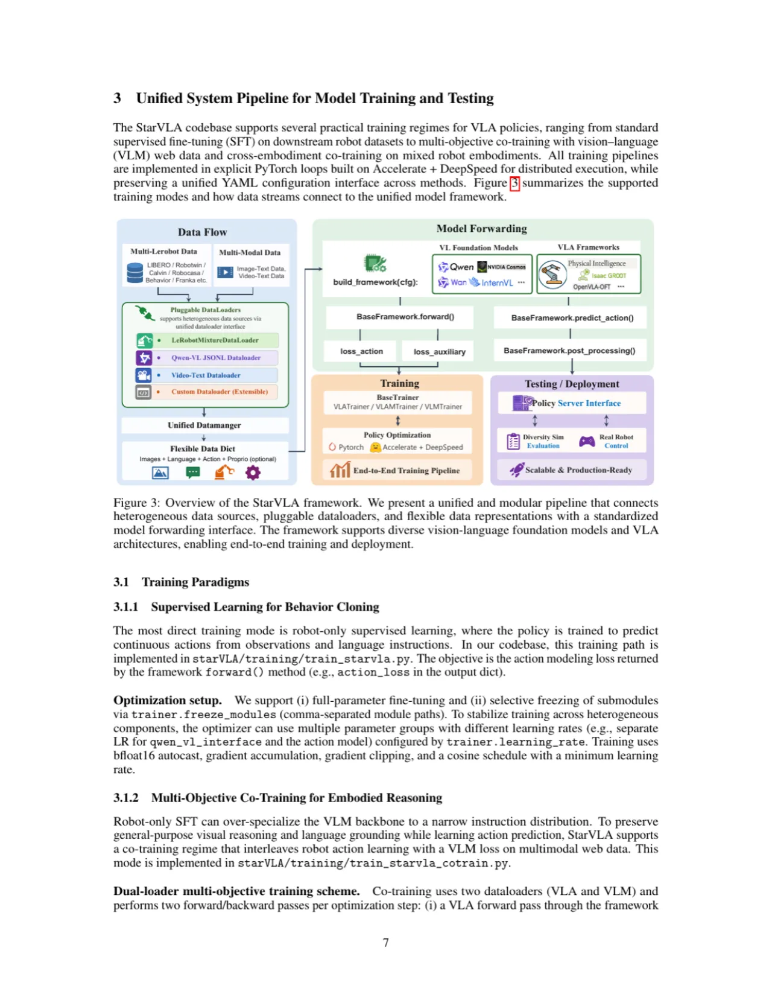

02 方法
StarVLA 的核心是 backbone–action head 双向模块化：骨干网络（VLM 或世界模型）与动作解码头 各自遵守统一的 I/O 协议，可独立替换而不影响另一侧。训练、推理与部署共用同一套代码， 配置通过 YAML 声明式指定。
统一抽象：Unified VLA Policy
策略被形式化为 π(at:t+k, yaux | x≤t, ℓ)， 将多模态观测历史映射到 k 步动作序列。训练损失为 ℒ = ℒaction + ℒaux， 其中 ℒaux 作为归纳偏置，可为零（纯行为克隆）或语言对齐/空间感知损失。 不同 VLA 范式均可理解为该公式在不同归纳偏置下的实例化。

统一 I/O 接口与 Server-Client 评测
StarVLA 为所有框架组件定义了两个核心方法：forward(raw_images, str, ...) 作为训练入口，
predict_action(raw_images, str, ...) 作为推理入口。
推理接口接受"归一化动作（均值=0，标准差=1）"并返回预测动作块（minus ground-truth 均值后的预测）。
这一设计与真实机器人传感器流镜像对应，使同一 checkpoint 可直接用于仿真评测和真实部署，
无需修改代码。评测基准代码通过 server-client 模式与模型推理解耦，benchmark 代码无需感知模型内部。

灵活训练范式
监督行为克隆（SFT）
最直接的训练方式，ℒaux = 0，仅优化动作预测损失。 StarVLA 将此作为建立单基准可复现基线的标准起点， 并提供了 benchmark 特定的训练/评测脚本。
多目标协同训练（Co-training）
在动作预测的同时引入 VLM 辅助目标（如空间感知 grounding 损失）， 保留模型的语言/视觉推理能力。 实验表明，空间引导协同训练可将 Google Robot 成功率从 66.1% 提升至 86.2%， 同时维持 RefCOCO-g 上 71.2 IoU@0.5 的空间感知精度。
跨体态训练（Cross-embodiment）
通过 mixture dataloader 混合来自不同机器人平台的数据， 训练单一泛化模型，实现跨 LIBERO、SimplerEnv、RoboTwin、RoboCasa-GR1 的联合训练。
强化学习微调（RL fine-tuning）
计划中的功能，目前仍在持续集成中（"an ongoing integration effort"，论文明确说明）。